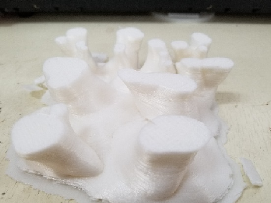

・さらにサイズを太くしました。また、道用先生にご教授いただき密度を100パーセントで出力することにしました。
・他の試作珊瑚よりは綺麗に印刷されていますが面が荒いです。
・歴代の珊瑚を並べて写真を撮りました。正直、全く成功する兆しが見えず印刷するのを躊躇するほど失敗が怖かったです。
・ここでようやくノズルを交換することになり、L-DEVOメンテナンスも行いました。
・下の写真はフィラメントをノズルに押し込んでいく歯車です。すでにノズルが詰まっているため歯車が空回りしています。
そのため押さえつけられているフィラメントが削られ、溝に詰まっている様子が見てわかります。

・まずは歯車全体が見えるように黒いパーツを分解していきます。

・細く硬めの素材のもので詰まったフィラメントを除去し綺麗にして完成です。

AUTODESKが無料提供しているソフトウェアのこと。
３Dデータを組み合わせたり、データの加工を行うためのソフトウェアです。 すでに作成してある３Dデータ同士をミックスして利用する場合などにも便利に利用できるツールです。
Meshmixerダウンロードリンク